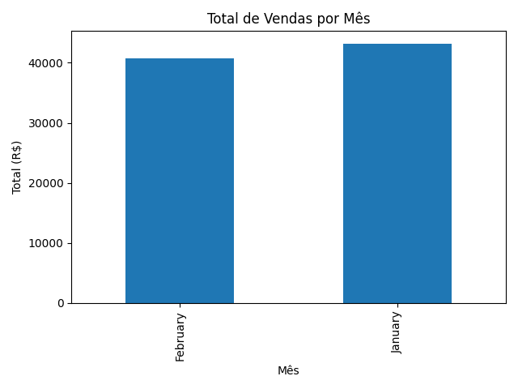

Descrição: Este projeto simula um fluxo completo de ETL (Extração, Transformação e Carga) aplicado a dados de vendas mensais. O objetivo é transformar dados brutos em insights acionáveis para tomada de decisão.
df_jan = pd.read_csv("dados/vendas_janeiro.csv")
df_fev = pd.read_csv("dados/vendas_fevereiro.csv")
df = pd.concat([df_jan, df_fev])
df["Valor Total"] = df["Quantidade"] * df["Preço Unitário"]
Gráfico gerado com base nos valores totais por mês:
